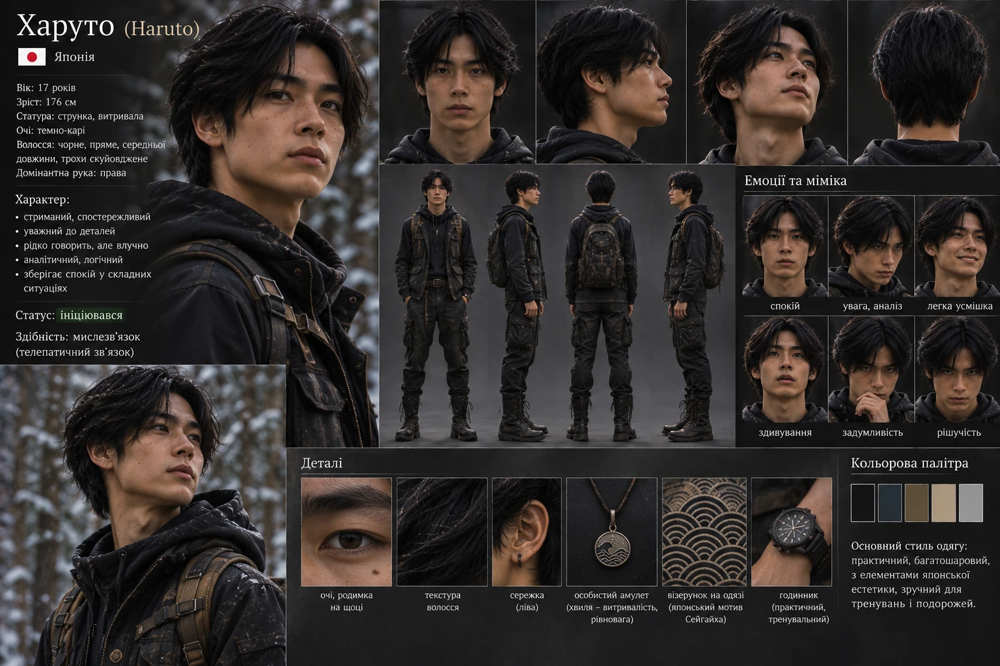

ХАРАКТЕР І ПОВЕДІНКА
Спостерігає уважніше за інших
Харуто стриманий і уважний до деталей. Він рідко говорить, але коли долучається до розмови, його слова зазвичай влучні. Йому властиві аналітичність, логічне мислення та здатність зберігати спокій у складних ситуаціях.
У спілкуванні з іншими учнями не прагне привертати до себе увагу. Натомість він слухає, аналізує й помічає те, що може залишитися непоміченим для решти.
НАВЧАННЯ ТА ЗДІБНОСТІ
Мислезв’язок
Після ініціації Харуто разом з іншими учнями Мольфара відкриває для себе мислезв’язок. Під час вправ він передає Ееро образ засніженого лісу, доводячи, що здатен спілкуватися не лише словами, а й подумки.
Згодом Харуто зауважує, що під час спільного зв’язку думки можуть накладатися одна на одну. Він розуміє важливість контролю: потрібно навчитися не лише передавати інформацію, а й обмежувати те, що сприймаєш від інших.
Харуто належить до групи семи найсильніших учнів Мольфара, які мають достатньо досвіду, щоб діяти самостійно в небезпечних ситуаціях.
ПАТЕРН ПЕРСОНАЖА
Довідкові характеристики
Зовнішність і фізичні параметри
- 17 років; зріст 176 см; струнка, витривала статура.
- Темно-карі очі; чорне пряме волосся середньої довжини.
- Невелика родимка на щоці; домінантна рука — права.
- Сережка у лівому вусі.
Одяг та особисті речі
- Практичний багатошаровий одяг для тренувань і подорожей.
- Японський мотив Сейґайха — хвилеподібний візерунок на одязі.
- Особистий амулет із хвилею, що символізує витривалість і рівновагу.
- Практичний тренувальний годинник.
Канон і походження відомостей
Сюжетні характеристики звірені з актуальним текстом книги. Вік, зріст, зовнішність, родимка, сережка, амулет, одяг і годинник взяті з погодженого візуального образу. Якщо наступна редакція книги змінить ці дані, сторінку потрібно буде оновити.